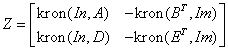

Intel® oneAPI Math Kernel Library Developer Reference - Fortran
Forms a matrix containing Kronecker products between the given matrices.
call slakf2( m, n, a, lda, b, d, e, z, ldz )
call dlakf2( m, n, a, lda, b, d, e, z, ldz )
call clakf2( m, n, a, lda, b, d, e, z, ldz )
call zlakf2( m, n, a, lda, b, d, e, z, ldz )
The routine ?lakf2 forms the 2*m*n by 2*m*n matrix Z.
,
where In is the identity matrix of size n and XT is the transpose of X. kron(X, Y) is the Kronecker product between the matrices X and Y.
INTEGER. Size of matrix, m≥ 1
INTEGER. Size of matrix, n≥ 1
REAL for slakf2,
DOUBLE PRECISION for dlakf2,
COMPLEX for clakf2,
DOUBLE COMPLEX for zlakf2,
Array, size lda-by-n. The matrix A in the output matrix Z.
INTEGER. The leading dimension of a, b, d, and e. lda≥m+n.
REAL for slakf2,
DOUBLE PRECISION for dlakf2,
COMPLEX for clakf2,
DOUBLE COMPLEX for zlakf2,
Array, size lda by n. Matrix used in forming the output matrix Z.
REAL for slakf2,
DOUBLE PRECISION for dlakf2,
COMPLEX for clakf2,
DOUBLE COMPLEX for zlakf2,
Array, size lda by m. Matrix used in forming the output matrix Z.
REAL for slakf2,
DOUBLE PRECISION for dlakf2,
COMPLEX for clakf2,
DOUBLE COMPLEX for zlakf2,
Array, size lda by n. Matrix used in forming the output matrix Z.
INTEGER. The leading dimension of Z. ldz≥ 2* m*n.
REAL for slakf2,
DOUBLE PRECISION for dlakf2,
COMPLEX for clakf2,
DOUBLE COMPLEX for zlakf2,
Array, size ldz-by-2*m*n. The resultant Kronecker m*n*2 -by-m*n*2 matrix.